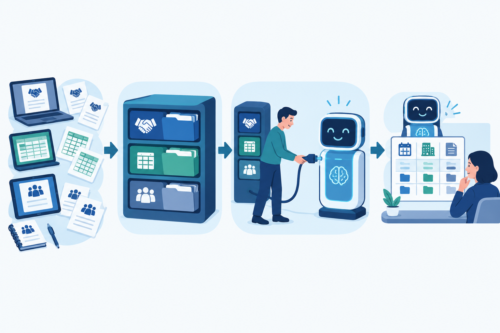
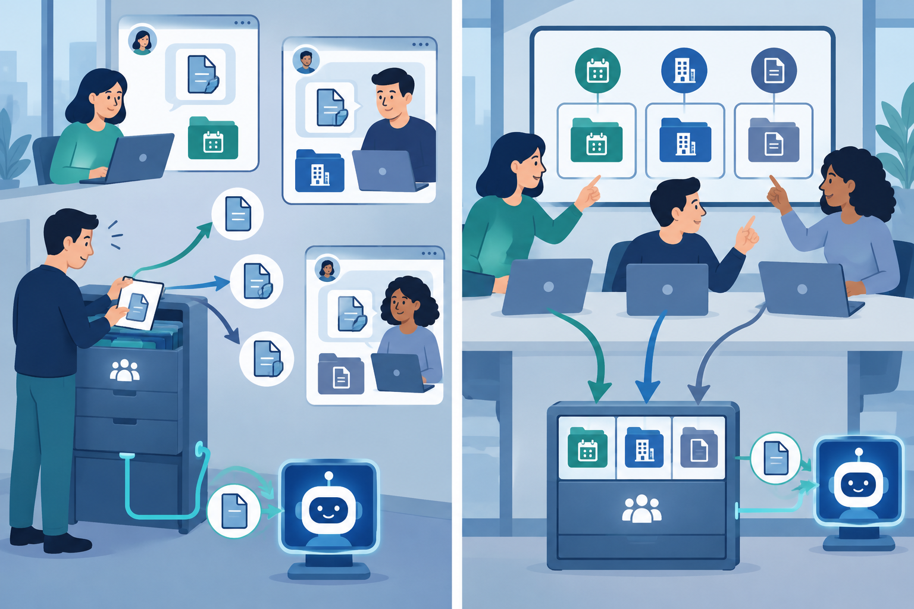

“지난 분기 거래처별 단가가 어떻게 바뀌었는지 정리해 줘.”
팀장의 요청에 AI 창을 열었다가 결국 직접 폴더를 뒤진 적은 없나요? 계약서는 그룹웨어 결재함에, 조정된 단가는 담당자가 메신저로 보낸 엑셀에, 합의한 이유는 회의록에 있습니다. 자료가 어디에 있는지 하나하나 설명하느니 내가 찾는 게 빠르겠다는 생각이 들겠죠. 자동화 도구를 갖춰 놓고도 여전히 손으로 일하는 이유입니다.
이럴 때 프롬프트를 더 잘 써야 한다고 생각하기 쉬운데요, 먼저 살펴볼 것은 따로 있습니다. 자료가 놓인 자리입니다.
업무 자료가 구글드라이브와 노션, 옵시디언에 흩어져 있다면 사람은 여러 곳을 오가며 찾아낼 수 있습니다. 하지만 AI로 작업하려면 자료를 찾을 곳부터 지정해 줘야 합니다. 앞서 단가 변동을 정리하는 일도 마찬가지입니다. 계약서와 변경된 단가, 회의록을 어디서 가져올지 정해져 있지 않으면 자료를 찾는 일은 여전히 사람 몫으로 남습니다. 도구를 더 들이기 전에 팀의 자료를 둘 곳부터 정해야 하는 이유입니다.
한 종류의 정보는 대표 장소 한 곳에 두되, 처음부터 AI가 접근할 수 있는 곳으로 고르는 것이 좋습니다. 사람만 들어갈 수 있는 곳에 자료를 쌓아 놓고 자동화를 기대할 수는 없겠죠. 자료를 둘 곳을 정했다면 파일 이름과 구조도 정리해야 합니다. ‘최종_진짜최종(2)’ 대신 날짜와 거래처, 문서 종류가 드러나는 이름을 쓰는 겁니다. AI가 필요한 자료를 찾을 수 있도록 이름과 구조를 명확히 하는 것이죠.
자료를 모으고, AI가 접근할 수 있도록 연결하고, 이름과 구조를 정리하는 일은 함께 이어져야 합니다. 어느 하나를 건너뛰면 다음 자동화를 시도할 때 빠뜨린 단계로 다시 돌아오게 됩니다.

그런데 회사에서는 이것만으로 충분하지 않습니다. 자료를 둘 곳은 개인이 정한다고 끝나는 일이 아니기 때문입니다. 나 혼자 규칙을 지켜 봤자 동료가 수정본을 메신저로 보내면 자료는 다시 흩어집니다. 개인의 정리 습관을 팀의 약속으로 만들어야 한다는 말입니다.
새 도구를 설치하기 전에 팀 회의에서 삼십 분만 써 보기 바랍니다. 견적서와 회의록은 어디에 둘 것인지, 파일 이름은 무엇으로 시작할 것인지 함께 정하는 데 말이죠. 재미없는 합의라고 느낄 수 있습니다. 하지만 자동화가 돌아가려면 바로 그 합의가 필요합니다.

도구가 늘어난다고 자동으로 일이 줄어들지는 않습니다. 자료가 있을 자리를 정하고 AI가 그곳에 접근할 수 있어야 합니다. 자동화의 시작은 자료를 어디에 두고 함께 관리할지 정하는 일입니다.